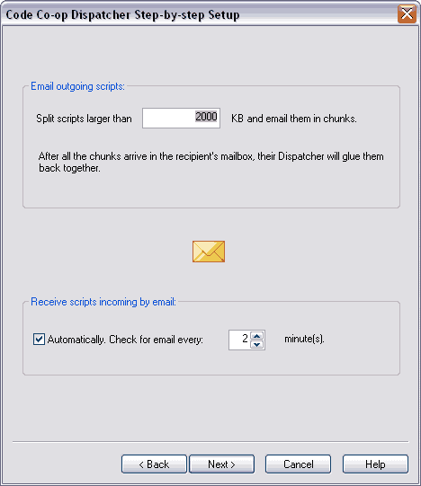

The last step of this wizard deals with your email settings. In some situations, especially during the distribution of full syncs, you will need to split the sync scripts up in order to send them over email. Your ISP or IT department or can tell you the maximum attachment size. By default it's set at 1024Kb. Here I have set the dispatcher to split scripts larger than 2000Kb.

Select Next. You will be brought to the final screen which confirms that your peer configuration is complete. Select Finish.